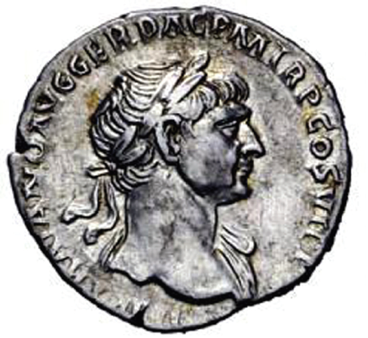

Ao estudar o Império Romano na época de Trajano (98-117), o professor propõe a análise iconográfica de um aureus, uma moeda de ouro, detendo-se na efígie e na legenda que a acompanha.

Legenda:
IMP (Imperatori – titulo atribuído após triunfo militar ou púrpura imperial)
TRAIANO (Trajano)
AVG (Augustus – venerável)
GER (germânico – vencedor dos germanos)
DAC (dacico – vencedor dos dácios)
PM (Pontifex Maximus – Sumo Pontífice)
TRP (Tribunicia Potestas – Poder do Tribuno)
COS VI (Consuli VI – Cônsul pela VI vez)
PP (Pater Patriae – Pai da Pátria, chefe das famílias romanas)
Disponível em: http://www.coinarchives.com. Acesso em setembro de 2008.
Com base na análise do documento e considerando o domínio dos conhecimentos sobre o Império Romano nos dois primeiros séculos da era cristã, ao nível de Educação Básica, os alunos podem concluir que:
São corretas APENAS as conclusões